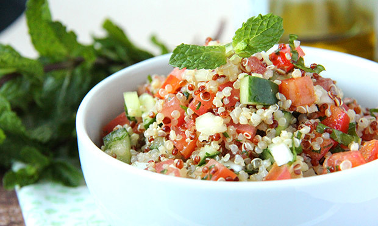

Tabule
Tabule é um prato libanês de salada, frequentemente degustado como um aperitivo.

Tenha uma limentação saudalvel e de qualidade, a empressa Be Health te ajuda a ter uma reeducção alimentar de qualidade; temos nutricionistas para ajudar você nessa nova caminhada
Tabule é um prato libanês de salada, frequentemente degustado como um aperitivo.
Em um recipiente, deixe o trigo de molho por 2 horas
Lave bem o trigo em água corrente, escorra e esprema nas mão para retirar o excesso de umidade
Passe a cebola picada em água fria e escorra bem
Junte os outros ingredientes (menos o tomate) e deixe tampado na geladeira por pelo menos 8 horas
Acrescente os tomates na hora de servir